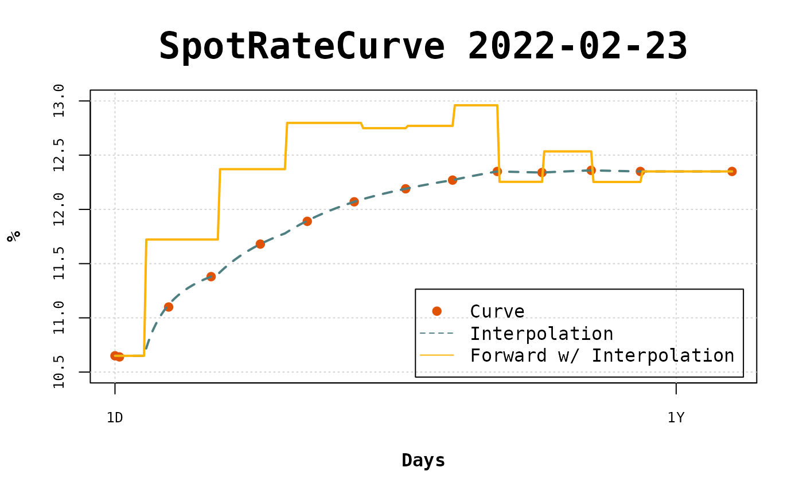
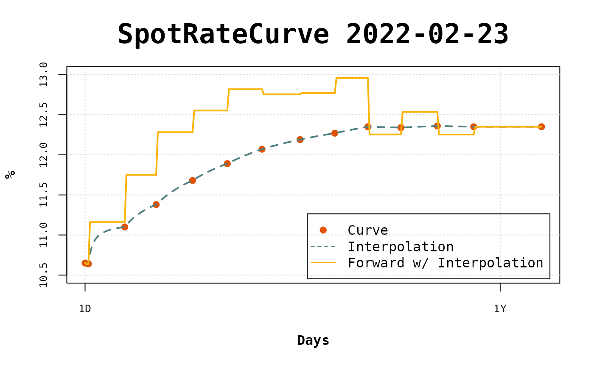

Introduction to flatforwardCOPOM
Wilson Freitas
12/03/2022
flatforwardCOPOM.RmdflatforwardCOPOM
Start attaching the packages bizdays, fixedincome and flatforwardCOPOM. The bizdays package must be loaded because the calendar Brazil/ANBIMA is refferenced and it is attached together with bizdays. Otherwise the used calendars should be created first.
Create a curve
Let’s create by hand the curve to be used in this tutorial.
terms <- c(1, 3, 25, 44, 66, 87, 108, 131, 152, 172, 192, 214, 236, 277)
rates <- c(
0.1065, 0.1064, 0.111, 0.1138, 0.1168, 0.1189, 0.1207, 0.1219,
0.1227, 0.1235, 0.1234, 0.1236, 0.1235, 0.1235
)
curve <- spotratecurve(
rates, terms, "discrete", "business/252", "Brazil/ANBIMA",
refdate = as.Date("2022-02-23")
)Create the FlatForwardCOPOM interpolation
Call interp_flatforwardcopom passing a vector with the dates of the meetings to be used in the interpolation. The conflicts = "second" will be used, since there are periods between meetings that have two points. In this cases, the second point will be used in the interpolation.
Once the Interpolation object is create, it is set to the curve with interpolation<- method.
copom_dates <- as.Date(
c("2022-03-17", "2022-05-05", "2022-06-17", "2022-08-04")
)
interpolation(curve) <- interp_flatforwardcopom(copom_dates, "second")Visualize the interpolation
With everything set the curve can be easily viewed with plot.
plot(curve, use_interpolation = TRUE, show_forward = TRUE,
legend_location = "bottomright")
To compare with the flat forward interpolation let’s visualize the curve with this different intepolation.
interpolation(curve) <- interp_flatforward()
plot(curve, use_interpolation = TRUE, show_forward = TRUE,
legend_location = "bottomright")
In the long term there isn’t mush difference, but in the short term the interpolated points and the forward rates are fairly different.